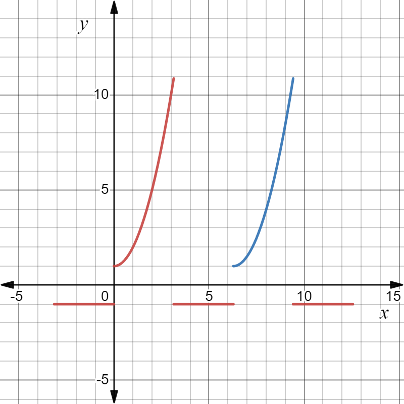
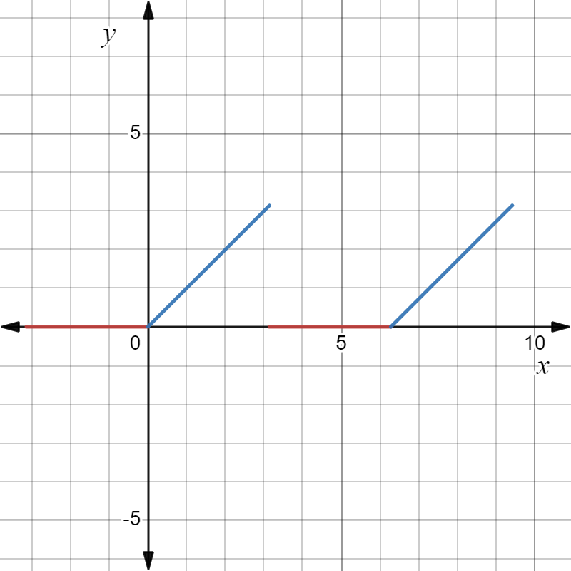
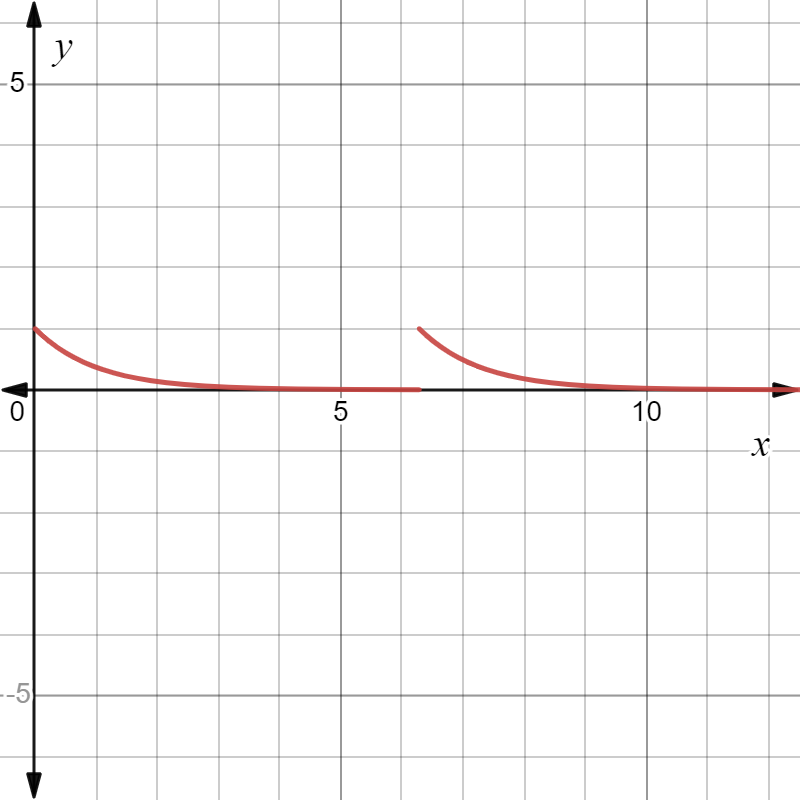
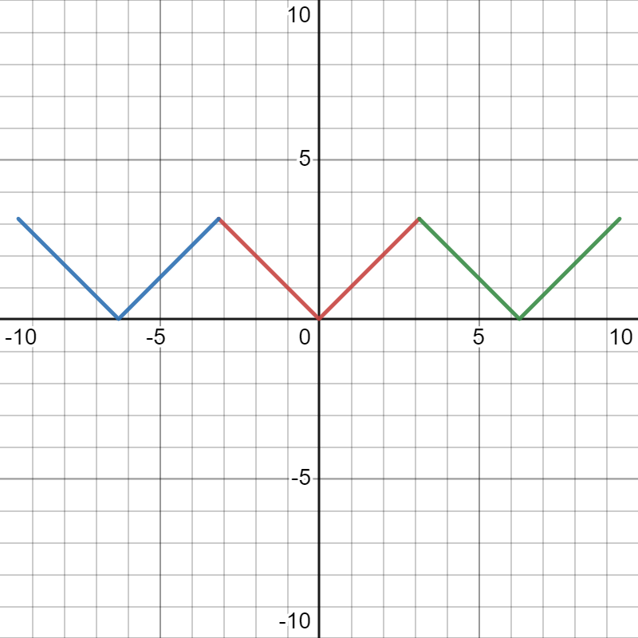
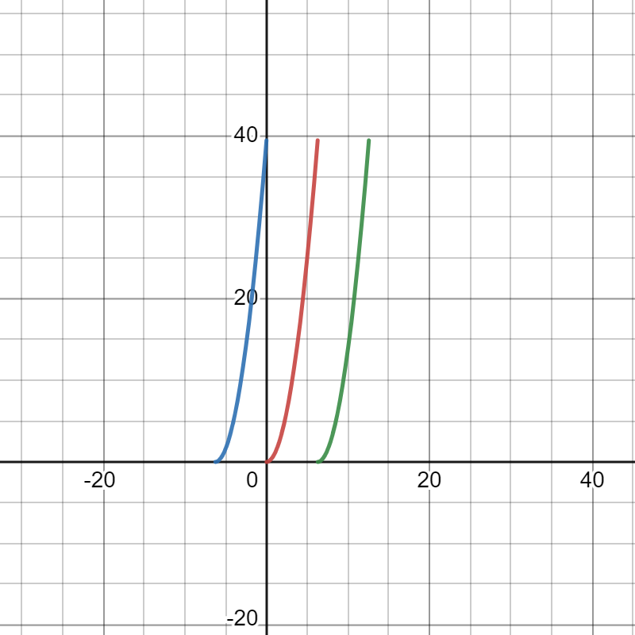
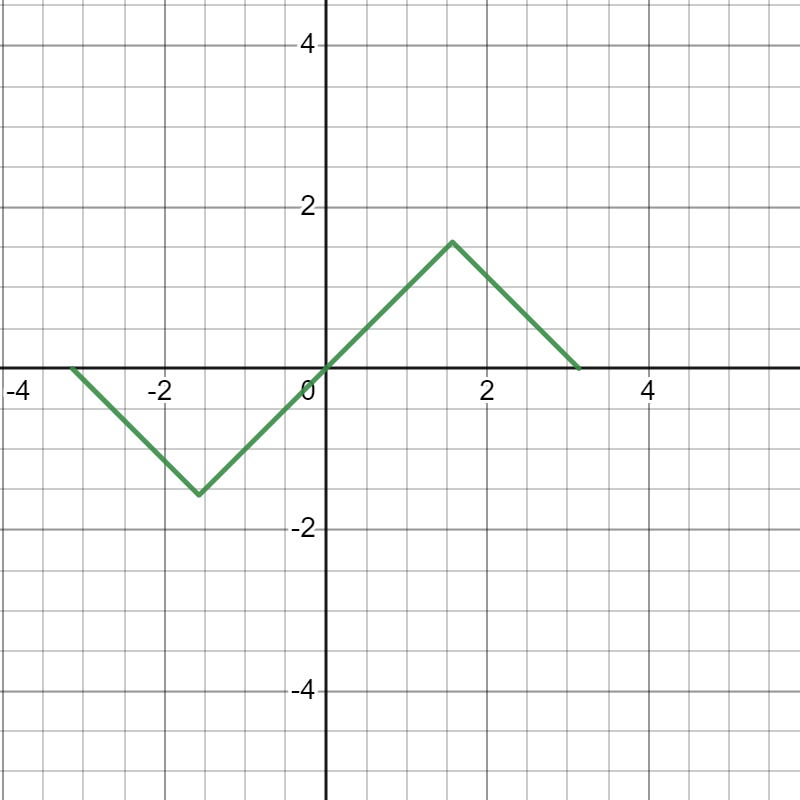

§7.5 傅里叶级数
一、三角级数及三角函数系的正交性
三角级数的定义
f(t)=2a0+n=1∑∞(ancoslnπx+bnsinlnπx)
其中 a0、b0、bn 都是常数
三角级数的正交性
1、coslπx、sinlπx、cosl2πx、cosl2πx、⋯、coslnπx、coslnπx 的线性组合构成了三角级数
三角级数系在 [−l,l] 上正交 ⇔∫−llf(x)⋅g(x)=0，f(x)、g(x) 属于三角函数系
二、函数展开为傅里叶级数
f(x)∼2a0+n=1∑∞(ancoslnπx+bnsinlnπx),T=2l
其中 a0=l1∫−llf(x)dx
an=l1∫−llf(x)coslnπxdx，n=0,1,⋯
bn=l1∫−llf(x)sinlnπxdx，n=1,2,⋯
Dirichlet 收敛定理
若 f(x)=f(x+2l) 在 [−l,l] 满足
- 连续或只有一个第一类间断点
- 至多只有有限个极值点
则 f(x) 的傅里叶级数收敛，并且当
- x 是 f(x) 连续点时，级数收敛于 f(x)
- x 是 f(x) 间断点时，级数收敛于 2f(x−)+f(x+)
周期延拓
若 f(x) 定义在 [−l,l] 上，定义
{F(x)=f(x)F(x+2l)=F(x)
这样定义的 F(x) 就是周期为 2l 的周期函数
例题
-
f(x)=f(x+2π)，f(x)={−1,−π<x≤01+x2,0<x≤π，则 f(x) 的傅里叶级数在 x=π 和 x=4π 分别收敛于 2π2 和 0

利用图像确定连续点和间断点
S(π)=2f(π+)+f(π−)=2π2
S(4π)=0
-
f(x)=f(x+2π)，f(x)={0,−π≤x<0x,0≤x<π，将 f(x) 展开为傅里叶级数，并求 n=1∑∞(2n−1)21
解：

间断点：x=(2k+1)π,k∈Z
a0=π1∫−ππxdx=2π
an=π1∫−ππf(x)cosnxdx=π1∫0πxcosnxdx=π1⋅n1∫0πxd(sinnx)=nπ1(xsinnx∣0π−∫0πsinnxdx)=nπ1⋅n1∫0πdcosnx=n2πcosnπ−1
bn=π1∫0πxsinnxdx=π1(−n1)∫0πxdcosnx=−nπ1(xcosnx∣0π−∫0πcosnxdx)=−ncosnπ=n(−1)n+1
f(x)=4π+n=1∑∞[n2πcosnπ−1cosnx+n(−1)n+1sinnx],x=(2k+1)π,k∈Z
a1=−π2⋅121，a2=0，a3=−π2⋅321，a4=0……
x=0 是 f(x) 的连续点，f(0)=4π+n=1∑∞πn21(cosnπ−1)⋅1
0=4π−π2(1+321+521+⋯)
S=8π2
-
f(x)=f(x+2π)，f(x)=e−x（x∈[0,2π)），将 f(x) 展开为傅里叶级数
解：

间断点：x=2kπ,k∈Z
an=π1∫02πe−xcosnxdx=n2π1(1−e−2π)−n21an
an=(n2+1)π1(1−e−2π)(n=0,1,2,⋯)
bn=π1∫02πe−xsinnxdx=(n2+1)πn(1−e−2π)(n=1,2,3,⋯)
a0=π1∫02πe−xdx=π1(1−e−2π)
f(x)=2π1−e−2π+n=1∑∞[(1+n2)π1−e−2πcosnx+(n2+1)πn(1−e−2π)sinnx](x=2kπ,k∈Z)
-
f(x)=∣x∣（x∈[−π,π]），将 f(x) 展开为傅里叶级数
解：

F(x)=∣x∣=F(x+2π),x∈[−π,π)，无间断点
f(x)=2a0+n=1∑∞(ancosnx+bnsinnx)
an=π1∫−ππ∣x∣cosnxdx=π2∫0xxcosnxdx=n2π2[(−1)n−1]
bn=π1∫−ππ∣x∣sinnxdx=0
a0=π2∫0πx⋅1dx=π
f(x)=2π+n=1∑∞n2π2[(−1)n−1]cosnx,x∈[−π,π]
-
f(x)=x2（x∈[0,2π]），将 f(x) 展开为傅里叶级数
解：

f(x)→F(x)=F(x+2π)，间断点 x=2kπ,k∈Z
a0=π1∫02πx2dx=38π2
an=π1∫02πx2cosnxdx=n24
bn=π1∫02πx2sinnxdx=−n4π
f(x)=34π2+n=1∑∞(n24cosnx−n4πsinnx),x∈(0,2π)
三、正弦级数和余弦级数
正弦级数
只含有正弦函数项
f(x)∼n=1∑∞bnsinlnπx
奇函数的傅里叶级数为正弦级数
奇延拓
若 f(x) 定义在 (0,l] 上，定义
F(x)=⎩⎨⎧f(x)0−f(−x)x∈(0,l]x=0x∈(−l,0)
然后再令 F(x+2l)=F(x)，这样定义的 F(x) 就是周期为 2l 的奇函数，它的傅里叶级数是一个正弦级数
余弦级数
只含有余弦函数项
f(x)∼2a0+n=1∑∞ancoslnπx
偶函数的傅里叶级数为余弦级数
偶延拓
若 f(x) 定义在 (0,l] 上，定义
F(x)=⎩⎨⎧f(x)0f(−x)x∈(0,l]x=0x∈(−l,0)
然后再令 F(x+2l)=F(x)，这样定义的 F(x) 就是周期为 2l 的偶函数，它的傅里叶级数是一个余弦级数
例题
-
将 f(x)=arcsin(sinx) 在 [−π,π] 上展开为傅里叶级数
解：
f(x)=⎩⎨⎧−π−x,x∈[−π,−2π)x,x∈[−2π,2π]π−x,x∈(2π,π]
∵F(x)=−F(x)
∴an=0
bn=π2∫0πf(x)sinnxdx=n2π4sin2nπ
f(x)=π4n=1∑∞n21sin2nπsinnx=π4n=1∑∞(2k−1)2(−1)k−1sin(2k−1)x,x∈[−π,π]
-
将 f(x)=x，x∈[0,1] 展开为
-
傅里叶级数
解：周期延拓 F(x)=F(x+1)，间断点 x=k,k∈Z
an=2∫01xcos2nπxdx=0(n=1,2,3,⋯)
a0=2∫01xdx=1
bn=2∫01xsin2nxdx=−nπ1
x=21+n=1∑∞(−nπ1)sin2nπx,x∈(0,1)
-
正弦级数
解：奇延拓 F(x)=F(x+2)，间断点 x=2k+1,k∈Z
an=0
bn=2∫01xsinnπxdx=nπ2(−1)n+1
x=π2n=1∑∞n(−1)n+1sinnπx,x∈[0,1)
-
余弦级数
解：偶延拓，无间断点，bn=0
a0=2∫01xdx=1
an=2∫01xcosnπxdx=n2π22[(−1)n−1]
x=21−π24k=1∑∞(2k−1)21cos(2k−1)πx,x∈[0,1]